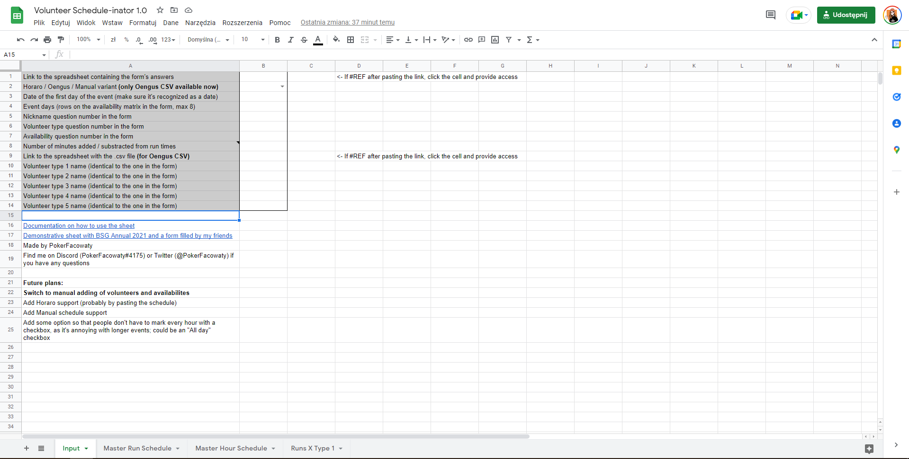
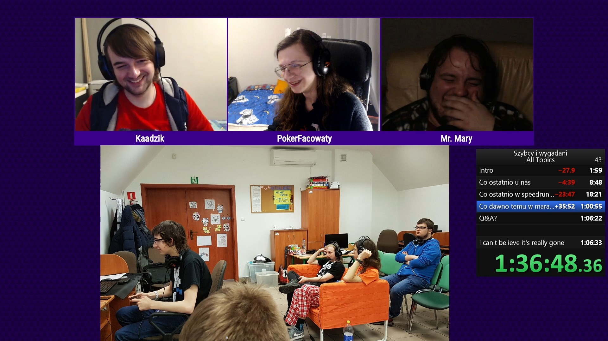
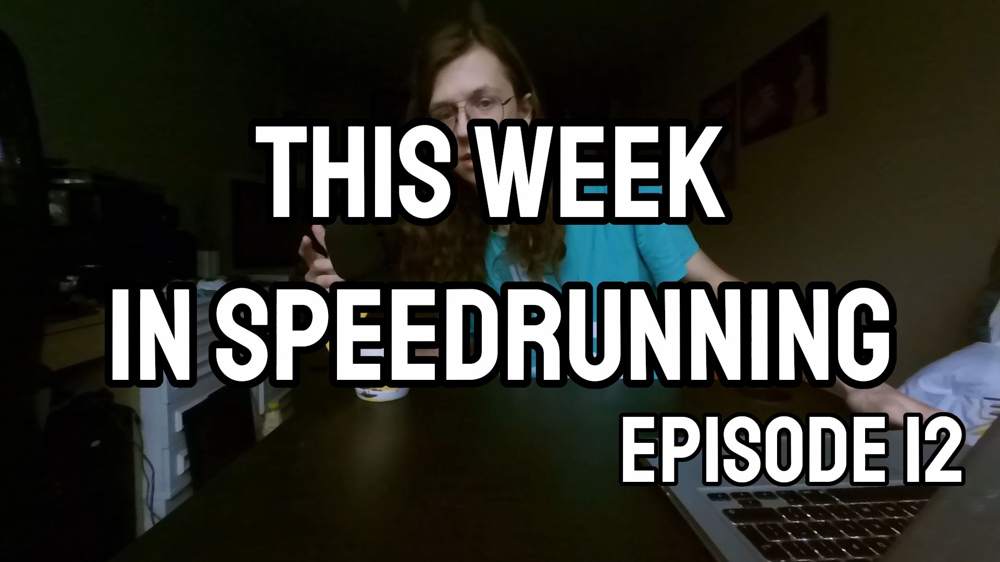

Schedule-i-nator
A spreadsheet that helps with volunteer scheduling designed to be used for speedrunning events. Took me 2 weekends and taught me a ton about Excel in general. Usable in the current state with an Oengus .csv file and a carefully prepared Google Form, the latter to be replaced with volunteers filling their availabilities in separate sheets connected to the main one.
Docs
Example

Szybcy i wygadani
Polish podcast about all things speedrunning that ran biweekly (streamed to GSPS' Twitch channel every other Sunday at 8PM, posted to YouTube later) for 2 years that I've co-hosted with Mr. Mary and Kaadzik. There was a total of 52 episodes released.

This Week in Speedrunning
A short weekly speedrunning news series I've done that ran for about 3 months. There were 14 episodes released. The end of it was unexpected - newly found full-time job and moving apartments made it so I just couldn't find the time and energy to continue working on it. I don't consider it finished or done and would like to pick it up when I know I can commit to something like this again.